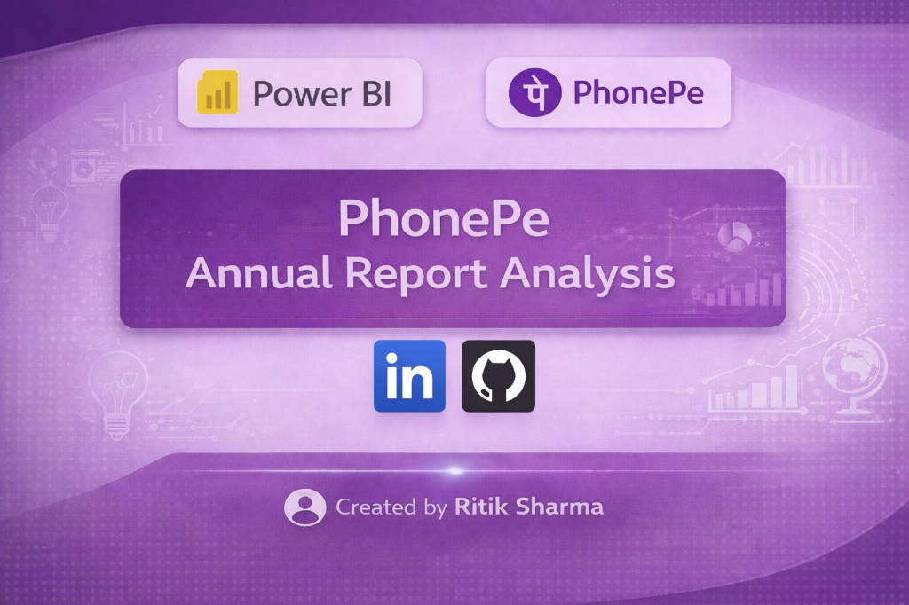

Ritik Sharma
B.Tech Electrical Engineering (SVNIT Surat) • Power BI, SQL, Python & Advanced Excel
Technical Skills & Profile
Data modeling, query optimization, and dashboard architecture background
Analytical Profile
Graduating in Electrical Engineering from SVNIT Surat with specialized analytical expertise. Experienced in building automated data extraction pipelines, formulating complex DAX measures in Power BI, executing exploratory data analysis (EDA) in Python, and transforming operational records into executive-level dashboards.
Technical Stack & Tools
Core Data Analytics Skills Analytics
Data Analyst Internships
Hands-on analytics internships focusing on ERP data, business reporting, and operational optimization
Data Analyst Intern
Summary: Worked with OMS and ERP data to understand production, inventory, and operational performance. Used data analysis and dashboards to support better monitoring, planning, and decision-making.
- Worked with OMS and ERP data related to production, inventory, stock levels, and operational activities.
- Used SQL, Excel, and Google Sheets to analyze data and prepare sales and inventory tracking reports.
- Developed interactive Power BI dashboards for monitoring key metrics, helping improve data clarity and operational visibility.
Data Analyst Intern
Summary: Focused on data cleaning, analysis, and visualization using Excel and SQL to evaluate business datasets and identify sales trends and key performance indicators.
- Cleaned, structured, and analyzed large datasets to extract meaningful trends and metrics.
- Utilized SQL and Excel to construct performance reports and analytical dashboards.
- Prepared visual insights and recommendations supporting business strategies that contributed to a 5–6% increase in revenue.
Branding & Marketing Intern
Summary: Managed brand identity, digital outreach, and promotional initiatives for alumni events and merchandise planning.
- Planned and executed promotional activities for merchandise committees and alumni gathering events.
- Managed social media presence, creating digital content to enhance audience engagement and brand visibility.
- Coordinated with council members and alumni networks to foster institutional community growth.
Data Analytics & Automation Projects
Interactive business intelligence dashboards, statistical models, and data pipelines

PhonePe Annual Report Analysis
FinTech & BIAnalyzed PhonePe Pulse data to understand digital payment trends, transaction performance, user activity, and the growth of financial services across India. Built an interactive Power BI dashboard to convert raw fintech data into executive insights and support data-driven decision-making.
- Analyzed transaction and user data across regions, distinguishing between Transaction Count (volume) and Transaction Amount (monetary value).
- Cleaned and prepared PhonePe Pulse dataset for Power BI modeling, establishing KPIs, trend charts, and state/region interactive filters.
- Analyzed financial service categories including loan disbursements (distinguishing disbursed loan count & total value from repayment/defaults).
- Evaluated geographical patterns across Indian states to identify high-volume vs high-value market concentrations.
- Formulated executive insights into service performance, user activity growth, and digital payment adoption trends.

GHG Emission Analytics Dashboard
ESG & SustainabilityDeveloped an interactive Power BI dashboard to analyze Greenhouse Gas (GHG) emissions for a rubber manufacturing industry across Scope 1, Scope 2, and Scope 3. The dashboard helps identify major emission sources, analyze department-wise and monthly trends, and support ESG reporting and data-driven sustainability decisions.
- Built an interactive Power BI dashboard to monitor and compare Scope 1, Scope 2, and Scope 3 emissions across operational activities.
- Analyzed department-wise, category-wise, fuel-wise, and monthly emission trends to identify major contributors to the carbon footprint.
- Identified logistics and diesel-operated vehicles as primary Scope 1 contributors, and upstream transportation as key Scope 3 driver.
- Analyzed grid electricity and solar energy consumption to evaluate their impact on Scope 2 emissions and sustainability performance.
- Utilized Power Query and DAX for data transformation, calculated measures, KPI development, and interactive dashboard analysis.

Supply Chain Analytics Dashboard
Supply Chain & OperationsDeveloped an interactive Power BI dashboard to analyze sales, profit, customer behavior, product performance, and pricing strategies using supply chain data from 2015–2017. Investigated the decline in sales and quantity sold in 2017 while profit remained relatively stable, identifying the role of product mix, pricing, and customer retention.
- Analyzed 178,396 records and 22 features, using SQL to filter incomplete 2018 data and Power Query for data cleaning and transformation.
- Built an interactive Power BI dashboard with DAX-based KPIs covering sales, profit, orders, quantity, repeat purchases, discounts, customers, and products.
- Investigated the key business problem of declining sales and quantity with stable profit, identifying the shift toward higher-priced products as a major contributing factor.
- Identified a significant decline in customer repeat-purchase rate during H2 2017, highlighting potential customer-retention issues.
- Analyzed product, customer, pricing, and discount performance to propose strategies for improving retention, product mix, demand planning, and sales growth.

SETU — India Energy Supply Chain Resilience Platform
Data Engineering & RiskDeveloped an end-to-end analytics platform to monitor India's crude oil supply-chain risks, combining geopolitical news, shipping corridors, commodity prices, sanctions, and petroleum buffer data into a unified dashboard for risk monitoring and decision support.
- Built a data pipeline collecting and processing geopolitical news from Google News RSS and government feeds, with duplicate detection, relevance filtering, and risk classification across 7 major maritime corridors.
- Developed a risk-scoring algorithm using event severity and exponential time decay to generate corridor risk scores from 0–100 for real-time threat detection.
- Integrated Brent, WTI, USD/INR exchange rates, OFAC sanctions, Strategic Petroleum Reserves (SPR), refinery stocks, and geopolitical events, served via FastAPI REST APIs.
- Created an interactive React dashboard featuring an interactive world map (Leaflet), riskometers, corridor risk breakdown bars, commodity price charts, buffer-stock tracking, and live news feeds.

Customer & Sales Analysis
SQL & PythonAnalyzed 10,000+ transactional records across 7 relational tables to understand customer behavior, sales performance, product categories, and seller contribution. Used SQL for business analysis and Python for data cleaning, preprocessing, and visualization to generate actionable insights.
- Worked with 7 relational tables covering customers, orders, order items, payments, products, sellers, and geolocation, analyzing entity relationships using SQL.
- Performed data cleaning and preprocessing using Python and Pandas, integrating SQL query results into Jupyter Notebook for exploratory analysis.
- Executed complex SQL queries to analyze customer distribution, sales trends, product categories, seller performance, retention, and YoY growth.
- Created Matplotlib visualizations to present revenue trends, seller efficiency, and customer purchasing behaviors.
- Generated data-backed business insights to optimize marketing target zones, inventory planning, and seller management.

Pizza Sales Analysis
SQL & MySQLDeveloped a SQL-based sales analysis project for a pizza store using transactional sales data. Imported and transformed CSV data into SQL, applied queries and database operations to filter and analyze sales information, and generated insights into pizza sales and business performance.
- Converted CSV sales data into SQL tables and structured the dataset for analytical querying.
- Used SQL operations such as CREATE, ALTER, JOIN, filtering, aggregation, and group functions to manipulate and analyze data.
- Wrote optimized SQL queries to extract filtered sales metrics and analyze pizza sales performance across categories.
- Analyzed transactional information to identify order patterns, product performance trends, and total store revenue.

Music Store Sales Analysis
SQL & MySQLDeveloped a SQL-based sales analysis project for a music store using MySQL. Used SQL queries to explore sales data, analyze customer and business performance, and extract meaningful insights from the database.
- Analyzed music store sales data using MySQL and complex SQL queries.
- Used SQL operations such as JOINs, filtering, aggregation, and sorting to extract relevant business metrics.
- Analyzed customer, sales, and product-related data to identify purchasing patterns and answer key business questions.
- Converted raw database information into structured insights to support sales and revenue growth strategies.

Performance Analysis Dashboard
Business IntelligenceDeveloped an interactive Power BI dashboard using real-world business data from CCS National Institute of Agricultural Marketing (NIAM), Jaipur, for AgroGrow Fertilizers Pvt. Ltd. Analyzed regional sales, dealer performance, product revenue, margins, and pricing to identify performance gaps and generate data-driven business recommendations.
- Cleaned and transformed unstructured business data using Excel and Power Query, handling duplicates, missing values, and formatting inconsistencies before analysis.
- Built an interactive Power BI dashboard with DAX-based KPIs to analyze sales performance across zones, territories, dealers, and products.
- Identified key business issues including uneven regional performance, dealer dependency, margin imbalance, and underperforming products, and proposed data-backed strategies for improving sales and dealer performance.
- Analyzed 21 products and identified high-performing products such as PPL BHARAT NPK and PPL BHARAT DAP White, along with underperforming products requiring targeted strategies.
- Compared dealer margins and MRP to identify margin inconsistencies and potential pricing-related business risks.

AI-Powered Automated Newsroom
AI AutomationBuilt an end-to-end AI-powered news automation platform that collects news from APIs and Instagram sources, analyzes and ranks stories using GenAI, removes duplicates, and generates original news content. Automatically produces branded Instagram posters, captions, and delivers content through scheduled workflows.
- Automated news collection, deduplication, relevance filtering, and ranking across NewsData.io, GNews, Guardian API, and RSS feeds.
- Utilized Gemini & Groq Multimodal AI for automated story classification, summarization, viral headline generation, and caption synthesis.
- Integrated Instagram monitoring & web scraping using Apify and Playwright to track trending social stories.
- Engineered an automated Poster Generation Engine using Python/Pillow to overlay headlines, brand logos, and AI visuals into publish-ready social assets.
- Orchestrated GitHub Actions cron workflows with a human-in-the-loop Telegram Bot review interface before live social media publishing.
Positions of Responsibility (POR)
Leadership roles, council coordination, and student engagement initiatives at SVNIT Surat
Advisory Committee Member
Alumni Training & Placement Affairs Council (ATPAC)
- Advised student placement coordinators and council teams on campus recruitment drives, interview preparation, and alumni networking.
- Guided corporate outreach strategy and supported event execution for graduating student placement sessions.
- Mentored junior team members on professional training programs and industry engagement activities.
Advisory Committee Member
Cultural Affairs Council (CAC)
- Guided student teams in planning, logistics, and executing major institute-wide cultural festivals and annual events.
- Provided strategic direction on event scheduling, venue logistics, budget management, and inter-college cultural competitions.
- Fostered an inclusive creative environment encouraging widespread student participation across campus cultural clubs.
Convener
Research & Innovation Affairs Council (RIAC)
- Spearheaded student research initiatives, technical innovation workshops, and project showcases across departments.
- Coordinated research symposiums and facilitated student-faculty technical project collaborations.
- Promoted a practical problem-solving culture by organizing technical talks, hackathons, and research forums.
Senior Executive
National Service Scheme (NSS)
- Led community outreach drives, social awareness campaigns, and environmental cleanliness initiatives with student volunteers.
- Organized health awareness programs, blood donation drives, and educational support activities in local communities.
- Managed team logistics, volunteer scheduling, and event coordination for social welfare initiatives.
Active Member
Kirdar — The Dramatics & Theater Club
- Actively performed in stage plays, street plays (Nukkad Natak), and dramatic acts for campus cultural events.
- Contributed to scriptwriting, character development, voice modulation rehearsals, and creative stage management.
- Utilized street theater as a powerful medium to convey social messages and engage diverse audiences.
Contact & Inquiries
Reach out for business analytics opportunities, dashboard consulting, or data inquiries
Email Address
Phone / Contact
Location
SVNIT Surat, Gujarat, India